Neural Strategy OS
Vertex — нейростратегическая платформа для организаций, которым нельзя ошибаться. Она собирает сигналы в реальном времени, внешнюю аналитику и данные о потоках капитала в единый контур принятия решений, чтобы оператор видел картину быстрее рынка.
Полноэкранный hero-экран с фоном из сетки частиц, оверлеем LaserGrid, живым блоком Neural Hub и потоковыми System Logs.
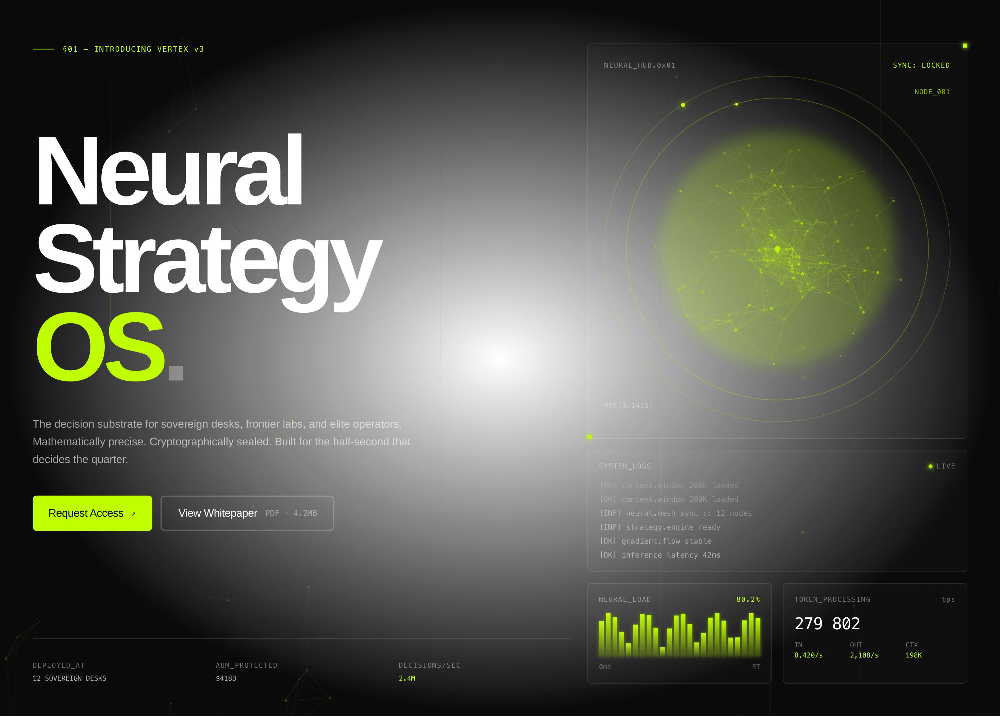
Шесть ключевых модулей показаны на десктопе в виде сетки из трёх колонок с border-card стилем. На мобильных — 3D-слайдер с drag-to-swipe и ощущением глубины.
Полноширинная marquee-полоса с живыми операционными метриками — throughput, latency, counts аномалий — в бесконечном цикле без пауз.
Анимированные SVG-орбиты соединяют ключевые узлы в реальном времени. Фоновый particle-canvas добавляет глубину и ощущение движения.
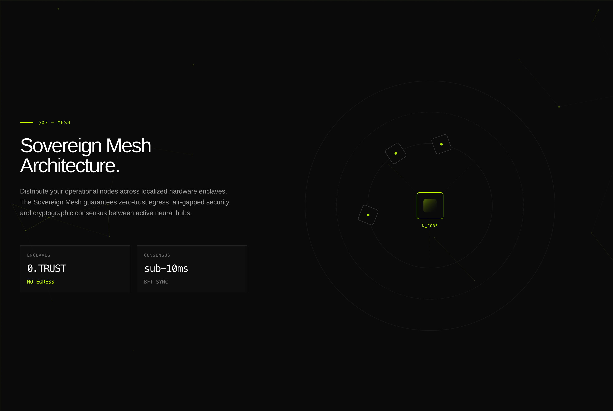
SVG-эллипсы с анимированным stroke-dashoffset создают плавные орбитальные следы узлов.
Canvas-система частиц с линиями связи, реагирующая на положение курсора.
Динамические линии между активными узлами пульсируют акцентным цветом при событии данных.
Три живые карточки показывают глобальную пропускную способность, найденные аномалии и векторные каналы — каждая поддержана анимированными bar chart и индикаторами состояния сетки.
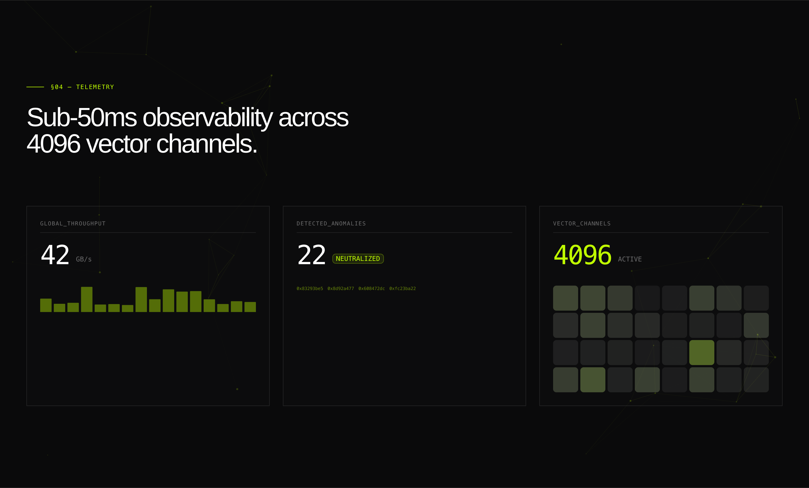
Каждое решение криптографически запечатывается и фиксируется в неизменяемом леджере. Проект опирается на SOC2 Type II и ISO 27001. Анимированные TX-строки идут в реальном времени.
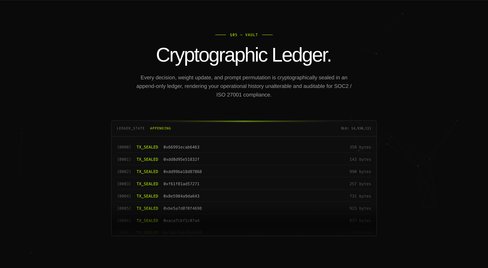
Каждое взаимодействие здесь осознанно — от перекрестного курсора до поэтапного появления секций и drag-to-swipe карточек.
Три контрольные точки с разной логикой компоновки — без компромиссов на любом экране.
| Breakpoint | Viewport | Layout | Navigation | Features |
|---|---|---|---|---|
| Desktop | ≥ 1024px | Sidebar 240px + 12-column grid | Липкий сайдбар с отслеживанием прокрутки | Полная сетка функций, particle canvas, орбитальная mesh-секция |
| Tablet | 768 – 1023px | Свернутый сайдбар + адаптированные сетки | Сайдбар только с иконками или верхняя панель | Сетка в 2 колонки, сокращённые анимации |
| Mobile | < 768px | Single column, full-width sections | Гамбургер-меню с полноэкранным оверлеем | 3D drag-to-swipe слайдер, упрощённая система частиц |
Один презентационный слайд собирает самые сильные мобильные состояния в цельный обзор. Hero, Feature Grid, Telemetry и Vault занимают первую линию; поддерживающие экраны идут ниже.
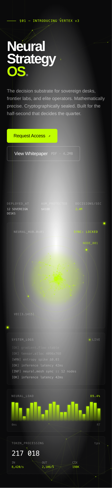
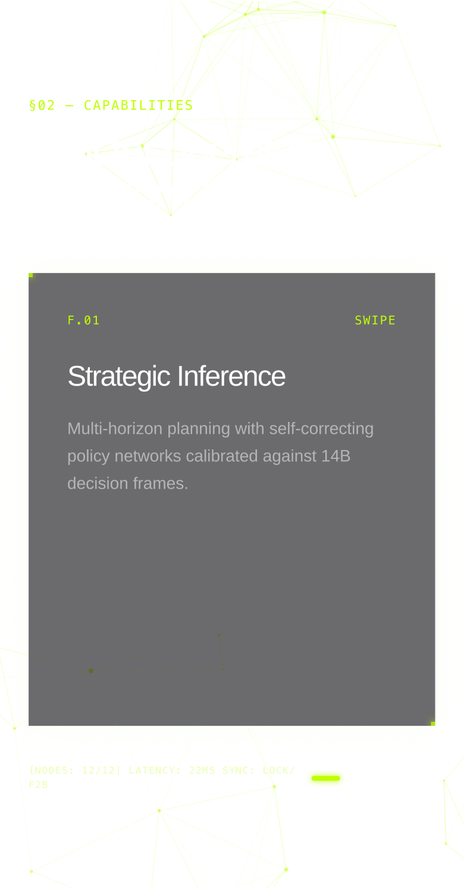
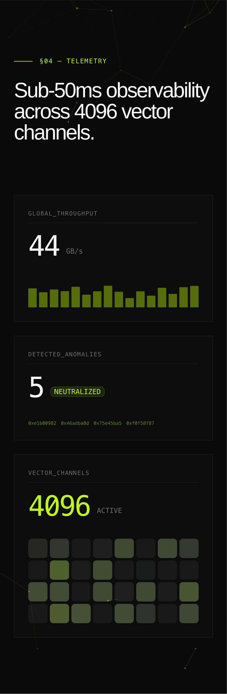
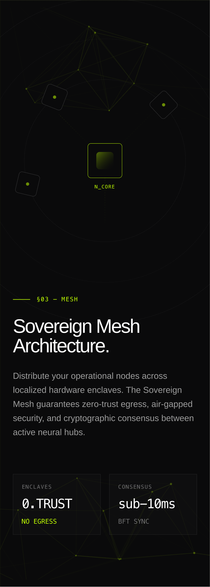
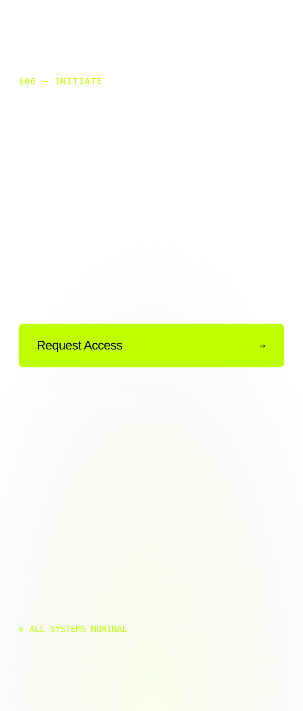